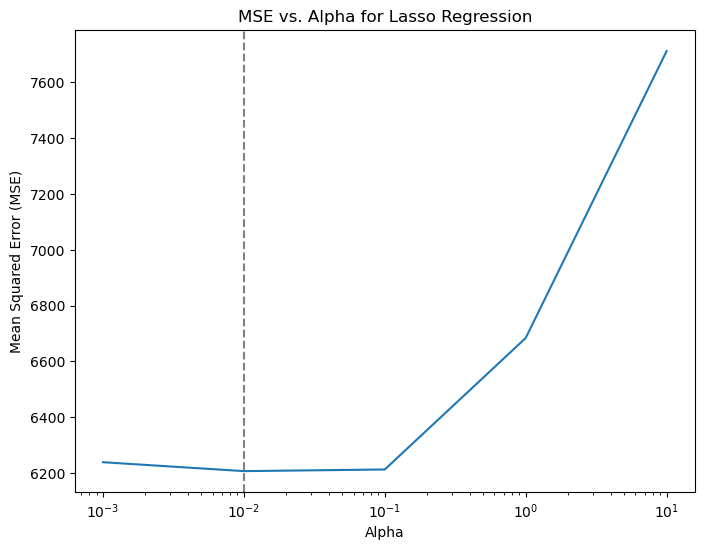
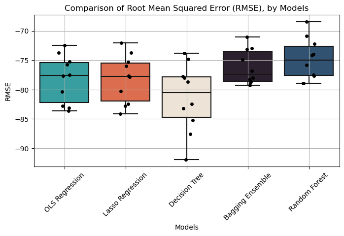

import numpy as npimport pandas as pdimport geopandas as gpdimport matplotlib.pyplot as pltimport seaborn as snsimport warningswarnings.simplefilter(action='ignore')my_colors =['#28AFB0', '#F46036', '#F1E3D3', '#2D1E2F', '#26547C', '#28AFB0']listings = pd.read_csv("listings_processed.csv") # processed data
Finally, we delve into the realm of machine learning to develop a predictive model aimed at estimating listing prices for Airbnb accommodations in Amsterdam. Leveraging a dataset enriched with a variety of features including location, property type, and amenities, our objective is to build a robust model capable of accurately predicting listing prices.
To ensure the reliability and generalizability of our model, we will employ k-fold cross-validation with k=10, a widely-used technique for assessing model performance and mitigating overfitting.
Additionally, we will explore the effectiveness of four distinct machine learning algorithms: Lasso regression, Decision Tree, Bagging, and Random Forest. By evaluating the performance of these models against our dataset, we aim to identify the most suitable approach for predicting listing prices.
Data Pre-Processing & Splitting
Pre-processing
In the pre-processing phase, we strategically removed irrelevant variables, including listing names, IDs, host names, and other non-predictive attributes, streamlining the dataset to focus solely on features with direct relevance to price prediction:
Additionally, recognizing the significance of categorical features in our analysis, we applied one-hot encoding to convert categorical variables into dummies, thereby facilitating their integration into our machine learning models.
neighbourhood, room_type are not ordinal, so we will just create dummy variables with them:
Now, we define our features and target variables. The features (X) represent the input data used to make predictions, while the target variable (y) represents the outcome we seek to predict:
# Defining features and targetsX = listings_2.drop(columns=["price"])y = listings_2["price"]print(X.shape, y.shape)
(6018, 33) (6018,)
We extract features by removing the “price” column from our dataset listings_2, ensuring that our model is trained solely on relevant attributes and does not inadvertently incorporate the target variable during training.
Subsequently, we isolate the target variable by assigning the “price” column to the variable y, delineating the values that our model will endeavor to predict.
Data Normalization
We recognize the importance of data normalization —a process aimed at standardizing the scale of numerical features within our dataset. To achieve this, we utilize the MinMaxScaler from the sklearn.preprocessing module, which rescales each feature to a specified range, typically between 0 and 1.
Here, we apply normalization data on: latitude, longitude, price, minimum_nights, number_of_reviews, reviews_per_month, calculated_hosts_listings_count, availability_365, number_of_reviews_ltm
We will use k-fold Cross Validation by running the cross_validate function. Here, we will implement cross validation with a Random Forest classifier and calculate the average test score across k=10 folds. This is how it works: - cv_results = cross_validate(MODEL, X, y, cv=10)
Model Training
A. Linear Regression
We start our modeling endeavors by implementing a Linear Regression approach.
We also compute the root mean squared error (RMSE) as a metric of predictive accuracy. Subsequently, we aggregate the RMSE scores obtained from each cross-validation fold to derive an average performance metric.
import matplotlib.pyplot as pltfrom sklearn.linear_model import LinearRegressionfrom sklearn.model_selection import cross_validate# Initialize Linear Regression modellinear_reg = LinearRegression()# Cross validation and performance evaluationrmse_ols = cross_validate(linear_reg, X, y, cv=10, scoring='neg_root_mean_squared_error') # Averagermse_ols = pd.DataFrame(rmse_ols)print( rmse_ols["test_score"].mean() )
-78.22445660007757
B. Lasso Regression
We also employ Lasso Regression —a technique renowned for its ability to perform variable selection and regularization, thereby enhancing model interpretability and generalization.
Prior to model training, we embark on a hyperparameter tuning process to identify the optimal alpha value —a crucial parameter governing the strength of regularization in Lasso Regression.
import matplotlib.pyplot as pltfrom sklearn.linear_model import LassoCV# Define a range of alpha values to search overalphas = [0.001, 0.01, 0.1, 1.0, 10.0]# Initialize LassoCV model with cross-validationlasso_cv = LassoCV(alphas=alphas, cv=5)# Fit the modellasso_cv.fit(X, y)# Get the MSE for each alpha valuemse_values = np.mean(lasso_cv.mse_path_, axis=1)
Code
# Plot MSE against alphaplt.figure(figsize=(8, 6))plt.plot(lasso_cv.alphas_, mse_values)plt.axvline(x=0.01, color='grey', linestyle='--')plt.xscale('log') # Set x-axis to log scaleplt.xlabel('Alpha')plt.ylabel('Mean Squared Error (MSE)')plt.title('MSE vs. Alpha for Lasso Regression')plt.grid(False)plt.show()print("Optimal Alpha:", lasso_cv.alpha_)

Figure 1: CV Lasso Hyperparameter Tuning
Optimal Alpha: 0.01
From Figure 1, we have identified the optimal hyperparameter for our Lasso Regression model to be alpha=0.01. With this optimal alpha value in hand, we are poised to proceed with training our Lasso Regression model:
from sklearn.linear_model import Lassofrom sklearn.model_selection import cross_validatelasso = Lasso(alpha=lasso_cv.alpha_, random_state=42)# Cross validation and performance evaluationrmse_lasso = cross_validate(lasso, X, y, cv=10, scoring='neg_root_mean_squared_error') # Averagermse_lasso = pd.DataFrame(rmse_lasso)print( rmse_lasso["test_score"].mean() )
-78.22394950116399
C. Decision Tree
For Decision Trees, common hyperparameters include the maximum depth of the tree, minimum samples required to split an internal node, minimum samples required to be at a leaf node, and maximum features considered for splitting.
from sklearn.tree import DecisionTreeRegressorfrom sklearn.model_selection import GridSearchCV# Define hyperparameters for Decision Treeparam_grid_dt = {'max_depth': [None, 10, 20, 30],'min_samples_split': [2, 5, 10],'min_samples_leaf': [1, 2, 4],'max_features': ['auto', 'sqrt', 'log2']}# Initialize Decision Tree Regressordt_regressor = DecisionTreeRegressor(random_state=42)# Perform grid search cross-validation for Decision Treegrid_search_dt = GridSearchCV(dt_regressor, param_grid_dt, cv=5, scoring='neg_mean_squared_error')grid_search_dt.fit(X, y)# Get the best hyperparameters for Decision Treebest_params_dt = grid_search_dt.best_params_print( best_params_dt )
For Bagging, additional hyperparameters such as the number of base estimators (trees), the number of features to consider, numbere fo samples to draw, etc.
However, here we will use Random Search, due to computational limitations:
import matplotlib.pyplot as pltfrom sklearn.ensemble import BaggingRegressorfrom sklearn.model_selection import cross_validate# Initialize Bagging Regressor with the best hyperparametersbagging_regressor = BaggingRegressor(base_estimator=base_estimator, n_estimators=best_params_bagging['n_estimators'], max_samples=best_params_bagging['max_samples'], max_features=best_params_bagging['max_features'], bootstrap=best_params_bagging['bootstrap'], bootstrap_features=best_params_bagging['bootstrap_features'], random_state=42)# Cross validation and performance evaluationrmse_bagging = cross_validate(bagging_reg, X, y, cv=10, scoring='neg_root_mean_squared_error') # Averagermse_bagging = pd.DataFrame(rmse_bagging)print( rmse_bagging["test_score"].mean() )
E. Random Forest (Ensemble Methods)
Finally, we train our Random Forests model, where additional hyperparameters such as the number of trees in the forest and the number of features to consider for each split also need to be considered.
# Define hyperparameters for Random Forestparam_dist_rf = {'n_estimators': randint(100, 500),'max_depth': [None] +list(range(10, 31, 5)),'min_samples_split': [2, 5, 10],'min_samples_leaf': [1, 2, 4],'max_features': ['auto', 'sqrt', 'log2']}# Define the hyperparameter grid#param_dist_rf = {'n_estimators': [10, 50, 100], # 'max_features': [None,'sqrt', 'log2'], 'criterion': ['gini','entropy']}# Initialize Random Forest Regressorrf_regressor = RandomForestRegressor(random_state=42)# Perform grid search cross-validation for Random Forestrandom_search_rf = RandomizedSearchCV(rf_regressor, param_distributions=param_dist_rf, n_iter=8, cv=5, scoring='neg_mean_squared_error', random_state=42)random_search_rf.fit(X, y)# Get the best hyperparameters for Random Forestbest_params_rf = random_search_rf.best_params_print( best_params_rf )
In the final stage of our analysis, we turn our attention to performance evaluation, where we assess the efficacy of our machine learning models in predicting Airbnb listing prices. To facilitate a comprehensive comparison, we compute the out-of-sample (OOS) root mean squared error (RMSE) for each model, a widely-used metric for evaluating prediction accuracy.
We visualize the distribution of OOS RMSE values across different models using boxplots:
Code
# Concatenate all RMSE scores into a single DataFramemodels = ['OLS Regression', 'Lasso Regression', 'Decision Tree', 'Bagging Ensemble', 'Random Forest']rmse_scores = [rmse_ols["test_score"], rmse_lasso["test_score"], rmse_tree["test_score"], rmse_bagging["test_score"], rmse_rf["test_score"]]my_rmse = pd.DataFrame({'Model': [model for model, scores inzip(models, rmse_scores) for _ in scores],'RMSE': np.concatenate(rmse_scores)})# Colorsmy_palette = ['#28AFB0', '#F46036', '#F1E3D3', '#2D1E2F', '#26547C', '#28AFB0']# Plot box plot using Seabornplt.figure(figsize=(8, 4))sns.boxplot(x='Model', y='RMSE', data=my_rmse, palette=my_palette)sns.stripplot(x='Model', y='RMSE', data=my_rmse, color='black', jitter=True, size=5)plt.title('Comparison of Root Mean Squared Error (RMSE), by Models')plt.xlabel('Models')plt.ylabel('RMSE')plt.xticks(rotation=45)plt.grid(True)plt.show()

Figure 2: Performance Evaluation
The results in Figure 2 reveals distinct performance profiles among the models, with Random Forest and Bagging emerging as the top performers. Not only do these models exhibit better median RMSE values, indicating superior predictive accuracy on average, but they also demonstrate less variance in RMSE, suggesting greater consistency in performance across different data samples. Conversely, the Decision Tree model displays worse RMSE and higher variability in prediction errors, indicating less stable performance across different datasets.
Interestingly, Linear Regression (OLS) and Lasso Regression exhibit similar performance profiles, with comparable median RMSE values and variability. This observation suggests that both models offer similar levels of predictive accuracy for the Amsterdam Airbnb dataset.
Overall, our performance evaluation underscores the superior predictive capabilities of Random Forest and Bagging models, positioning them as preferred choices for accurate and reliable price predictions within the Amsterdam Airbnb market.